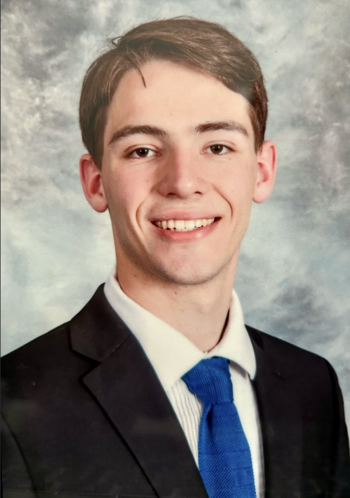

Sports Journalist
Watch games meticulously, writing game recaps and pitching uniquely angled stories each week, such as profiles or features. Interview coaches and players regularly to help inform the public of what the team does outside of the game, such as team-bonding activities or new training techniques.
Work both play-by-play and color commentary for games — studying players, teams and other relevant factors to ensure optimal preparation. Effectively communicate with other broadcasters to ensure everything is being run smoothly and all equipment is transported properly.
Wrote features, profiles and previews relating to local NY sports teams like the Mets and events like “Fanatics Fest.” Traveled into New York City to conduct interviews and capture photos/video to edit and post short-clips. Started and co-ran the “amNewYorkSports” Instagram account, amassing over 300 followers and frequently collaborating with local influencers.